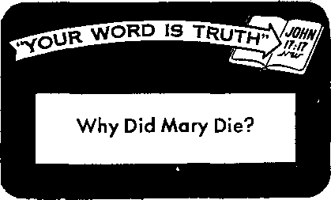

* What pave Diesel the compression ignition idea? P. 24, 1[3, '
• Why Mary’s death poses a dilemma for Roman Catholic theologians? P. 2jt 1(3. /

Is it paradise or destruction?
A strange light shines from Persia
Tt contributes to personality development
- — ' ■—
Dancing dolls and kalilosi guns
SEPTEMBER 22, 1957 semimonthly
THE MISSION OF THIS JOURNAL
News sources that are able to keep you awake to the vital Issues of our times must be unfettered by censorship and selfish interests. “Awake I” has no fetters. It recognizes facts, faces facts, Is free to publish facts. It is not bound by political ambitions or obligations; it is unhampered by advertisers whose toes must not be trodden on; It Is unprejudiced by traditional creeds. This journal keeps itself free that it may speak freely to you. But it does not abuse its freedom. It maintains integrity to truth.
"Awake!” uses the regular news channels, but Is not dependent on them. Its own correspondents are on all continents, in scores of nations. From the four corners of the earth their uncensored, on-the-scenes reports come to you through these columns. This journal's viewpoint is not narrow, but is international. It is read in many nations, in many languages, by persons of all ages. Through its pages many fields o£ knowledge pass in review—government, commerce, religion, history, geography, science, social conditions, natural wonders—why, its coverage is as broad as the earth and as high as the heavens.
"Awake!” pledges itself to righteous principles, to exposing hidden foes and subtle dangers, to championing freedom for all, to comforting mourners and strengthening those disheartened by the failures of a delinquent world, reflecting sure hope for the establishment of a righteous New World.
Get acquainted with “Awake!” Keep awake by reading "AwakeI”
Published Semimonthly By WATCHTOWER BIBLE AND TRACT SOCIETY OF NEW YORK, INC. 117 Adams Street, Brooklyn 1, New York, U. S. A.
N. H. Knorr. President Grant Stitkr, Secretary
Printino thi* issue: 2,450,000
Othw liniMpsi in whlrt “AwiU!” |, piblhhtt: Semimonthly—Afrikaans, Finnish, French, German* <htek, Holiandieli, Iulian, NofwealiD, Spanish, ttiredlBh.
■tmthly—DanMb Indonesian, Japanese, Pnftufu&ae, Ukrainian.
Year!; pihscrtptl&n rate*
Oflcta fen' ttinlmonililF editions
U.S., 117 Adama St., Brooklyn 1, N.Y. $L Autralia, 11 Beresford Rd., StHlWld, N.S.W. &/-Caaiii, 150 BrldgtUnd Ave., Tcffunto 10, Ont 11 Englui* Crnran Terrace, Limdon, W. 2 7/-
New Zaaltnd, G.P.O. Bex 30, WelllncUra, C. 1 7/-Snth AfrlM, Private Baj, Elandrfonuto, Tvl. 7/'
Monthly edrtl«» net half the ib«a rate*.
Five cent* a copy
IhmHtftncA? should be unt to office In your evun-trr In compliance with regulaUoEK to guirsntee safe deliver; of money, Remlttanctfi are accepted at Brooklyn from countries where no office Is Incited, by InlemUoml money order only. Subsodptlon mtea in different cuunlriBS are hero st*Led in local currency, Not Im af ap|ratl«t (with renewal blank) is sent at least two Issues before subscript! un expires. Chaapo of nHrgit when sent to our office may be expected effective within one month. Bend your old as veil fia new addren.
Entered as second-elm matter st Brooklyn> N. Y. Printed in U.S.A.
CONTENTS
|
The Wonder of Growth |
3 |
What Is the Bah&’i Cause? |
17 |
|
What Is Earth’s Destiny? |
5 |
Salesmanship at the Summit |
20 |
|
The United States Fertile Soil for |
A President Falls |
21 | |
|
Heathen Missionaries |
7 |
The Way It Began |
24 |
|
Goings On in Apedom |
8 |
Church Drives Are Reaping More |
24 |
|
Witchcraft Murder Among Africans |
9 |
“Your Word Is Truth” | |
|
Bull Cures Rheumatism |
11 |
Why Did Mary Die? |
25 |
|
Benefits from Child Flay |
12 |
Gilead Graduates Its 29th Class |
28 |
|
The Public Mind |
15 |
Do You Know? |
28 |
|
Underground Giant Rocks Mexico |
16 |
Watching the World |
29 |
XX/VER three thousand years ago a seed no larger than a baby’s thumbnail fell to the ground. In the moist soil it germinated and sent forth a shoot. As cells continued to multiply the shoot became a young tree. Its bark thickened, its trunk grew sturdier, its top reached toward the sky. That tree today is a forest giant standing 272 feet tall with a trunk thirty-six feet in diameter and bark two feet thick.
How did this immense tree come from such a small seed? What was it that caused the cells in that seed to multiply? What force directed the process so that some cells formed the trunk, some the bark, others the branches, and still others the needles of this giant sequoia? Why did the cells group in such a way so as to make this tree different from a tree of another kind? What determines this difference, and how did that determining factor come to be? Science still seeks the answers.
naei of growth
Growth is a wonder that has perplexed mankind for ages. Men have watched it and marveled.
What is especially amazing is the pattern it follows. Seeds from each kind of tree always produce trees of the same kind. A redwood does not produce a eucalyptus, nor does an apple tree produce an orange tree. The respective seeds always produce trees of the same general shape, the same kind of wood and the same type of leaves. It seems as if the multiplying cells follow a master pattern that is locked within each family kind.
The same is true in living creatures. The growth of each kind from a formless egg cell follows a definite pattern. Thus humans reproduce humans, cats reproduce cats and cows reproduce cows. Each family kind has its own fixed pattern.
But how did the great variety of patterns come to be? How did they get locked in the cells of each kind of creature? Who determined what shape, size and color of creature the master pattern would cause multiplying cells to produce?
Take, for example, a human egg cell. Thirty hours after fertilization by a microscopic male sperm it separates into two cells. At 50 hours there are four cells, and at 60 there are eight. The wonder of growth thus begins, following a specific pattern. It will not conclude until another human creature has reached maturity.
Now, what is it that causes these multiplying cells to form themselves into arms, legs, fingers, and so forth? What causes them to form bones of different shapes and sizes and to leave cavities and holes at the precise places where needed? Can it be said that they have a knowledge of engineering to do these things? What directs other cells to form two eyes with optically correct lenses? Can it be said that they have a knowledge of optics that makes it possible for them to design and produce these light-sensitive organs? What about those that form the ears? Have they been instructed in acoustics? And what about those that make the heart? Have they been educated in the principles of pump making? The same questions could be asked about other organs of the body. Each must be fashioned by dumb cells according to a certain design.
There can be no doubt about it. This is evidence that growth is not haphazard. It follows well-established patterns, patterns that testify to careful thinking by a great intelligence.
We can rightly ask, then, Who is the one that determined what pattern multiplying cells would follow to produce a man from an egg cell? Who is the one that decided what specialized organs man would need, how they should be designed, how they should function, how they should repair themselves and how they should be protected in the body? Who is the one that established the laws of growth and determined what life forms multiplying cells should produce ?
There can be but one answer—Almighty God.
What man’s power of reason tells him from watching the wonder of growth is confirmed by the Bible. A living, intelligent Creator of infinite wisdom set the process of growth into motion according to patterns he established. Regarding this One, whose name is Jehovah, the Bible says: “Thus saith Jehovah, thy Redeemer, and he that formed thee from the womb: I am Jehovah, that maketh all things; that stretcheth forth the heavens alone; that spreadeth abroad the earth.” “I have made the earth, the men and the beasts that are upon the face of the earth, by my .great power and by my outstretched arm; and I give it unto whom it seemeth right unto me.”—Isaiah 44:24; Jeremiah 27:5, Am. Stan. Ver.
Here is the master Designer and Maker of the wonders we see in living things. He is the One who purposed that the growth of plants and creatures should follow cer-tained fixed patterns. This explains why cells can automatically form into a beautifully engineered optical instrument called the eye; or into a delicately designed filter called the kidney; or into an intricate thinking and memory mechanism called the brain. Dumb cells produce what God designed.
Whether a person looks at a human body and marvels at how this beautifully shaped organism could come from a small egg cell, or whether he looks at a majestic sequoia tree and wonders how it could have come from a seed no larger than a baby’s thumbnail, he has before him living evidence of an invisible Creator.—Romans 1:20.
When a man unites what he learns from the marvels in God’s creations with the information found in the Bible, he has the building blocks of faith. His understanding then opens up like the pulling away of curtains from a picture window. Before him is a clear view of his relationship to his Creator and of God’s purposes for the earth and for man. With this understanding he begins a new kind of growth, a growth toward spiritual maturity.
i WHAT IS
EARTH'S . _ DESTINY
Thi* earth supplies man with food, clothing and shelter. Will it always be hie home or will eomeday an act of God or nature destroy it?
ALL Religions Prophesy Flaming End for Earth Which Would Come If Our Sun Blows Up.” Thus read the heading of a syndicated article by a leading New York astronomer, Kenneth Heuer. He next quoted from the Bible: “The day of the Lord will come as a thief in the night; in which the heavens shall pass away with a great noise, and the elements shall melt with fervent heat, the earth also and the works that are therein shall be burned up.” Mr. Heuer goes on to say: “It is a notable fact that all religions have prophesied a flaming end to the kingdom of man.”
In his book The End o/ the World, after telling of many of the prophecies made about the world’s end, astronomer Heuer lists various possibilities. Among these are: an act of God, collision with a comet, the near approach of the moon; the sun cooling off, another star or planet colliding or coming too close to : the earth.
One of the latest theories advanced as to how this earth will end is that it will be caused by solar evolution. “A few billion years from now our sun is bound to expand into a red super-gradually engulfing in its slowly
swelling body the system of inner planets to which it once gave birth.”—Scientific Monthly, December, 1953.
Representative of the assurance that someday this earth will end is the theory expressed by Donald H. Menzel, director of Harvard Observatory: “I cannot bring myself to believe that the universe is a perpetual-motion machine, effectively manufacturing energy from nothing. Without such a miracle, the present state of the cosmos appears to be temporary. Someday the cosmic fuel will give out and the sun will grow cold along with the other stars.”—The Atlantic Monthly, December, 1955.
All such theories about the certainty of the earth’s end call to mind a point made . by Heuer. Philosophically he observes that "the ideas of science are changing, and it may be that just when the sun is supposed to stop ‘burning’ a new theory will be invented, and the sun will continue to shine.” In fact, some such theory has already been advanced by certain scientists. According to it stars flying through space attract enough hydrogen so as to replenish what energy they have lost because of radiation. The hydrogen itself, in this theory, is held to come into being as space expands.
What is the destiny of this earth? Will it come to an end by some so-called natural means? or by man’s destructive works? or will God-destroy it by fire? Is it true that the Bible prophesies a flaming end for this earth?
Since the orderly arrangement of the vast universe as well as that prevailing upon the earth argues intelligent design we accept the Scriptural explanation that “in the beginning God created the heaven and the earth.’’ (Genesis 1:1) Being an intelligent Creator, Jehovah had a purpose in creating this planet. And since he endowed us with intelligence and ability to reason we properly can expect that he would give us information regarding that purpose. Has he? Yes. Where? In his Word, the Bible.
In that Word we learn of God’s purpose regarding the earth and man in his command to the first human pair: “Be fruitful and become many and fill the earth and subdue it, and have in subjection” the lower animals. Yes, God created the earth "not in vain, he formed it to be inhabited.” —Genesis 1:28, New World Trans.; Isaiah 45:18.
As Bible chronology shows, it was about six thousand years ago that God placed man and woman in the garden of Eden. But far from seeing earth’s destiny practically realized after all that time we see just the opposite. We see countless square miles of scorched deserts or areas covered with ice and snow, which are most inhospitable to man. While man has subdued some parts of the earth he has desolated other parts, as noted by city slums, war ruins and land laid waste owing to dust storms and soil erosion because of improper farming methods.
As for man himself, he has lost dominion over the lower animals, many of them being his mortal enemies and he having caused others to become extinct. And as for his own mind and body, far from being perfect and having the prospect of endless life, as did the first human pair, man today is sinful, depraved and at war with his fellow man. He is also mentally and physically sick, crowding hospitals and mental institutions and hastening to his grave after his proverbial threescore years and ten. Can it be that because of this sorry state of affairs upon the earth God changed his mind as to earth’s destiny and decreed that it will be destroyed, by some natural phenomena, by man’s hands or by some miraculous act on his part?
That is what many orthodox religions teach and that is why some scientists state that all religions teach a flaming end for this planet. However, such individuals overlook the many plain statements of the Scriptures showing that the earth will endure forever, to time indefinite. Thus we are told that “one generation passeth away, and another generation cometh: but the earth abideth for ever.” “And he built his sanctuary like high palaces, like the earth whieh he hath established for ever.” —Ecclesiastes 1:4; Psalm 78:69.
In further support thereof note that God's Word promises a Kingdom rule by God’s Son for this earth that will never end: “Of the increase of his government and peace there shall be no end.” Yes, the kingdom that God will set up shall never be destroyed but “it shall stand for ever.” —Isaiah 9:7; Daniel 2:44.
Perhaps some reader now asks, What about the expression “the end of the world,” found so often in the Scriptures, and such prophecies as speak of the earth and its elements being burned up? How can these seemingly conflicting texts be harmonized? In view of the plain Scriptural statements and powerful reasons arguing for the enduring quality of this earth we must conclude that such references do not apply to the literal earth. And this fact becomes apparent as we examine such references and especially the original Greek words used.—Matthew 24:3; 2 Peter 3:7, 10.
Thus 2 Peter 3:7 tells not only of the earth’s being burned up but also of the heavens’ being consumed. Since the Bible tells us that God’s throne is in the heavens, we know that those heavens certainly will not pass away and so the reference must be to a symbolic or figurative heavens. And if the heavens are figurative we must conclude that the earth referred to also is a figurative, not a literal one.
A case in point is Peter’s words in the context telling of the world of Noah’s day perishing. What did end back there was truly a world, an aion or “system of things,” a kosmos or orderly arrangement or organization upon the earth, but not the literal earth, the planet itself. In fact, frequently we find the term “earth” used in a figurative sense, as when we read; “Let all the earth fear the Lord,” Certainly the literal earth or planet cannot fear Jehovah, but the people upon it can and must if they would gain life.—Psalm 33:8; 2 Peter 3:6,7.
God’s Destiny for This Earth
Yet to Be Realized
The Scriptures show that the Creator, Jehovah, is almighty and all-wise. Therefore none can successfully interfere with his purposes. He can always be relied upon, for, as he says of himself, “I, Jehovah, change not.” And says he regarding his purposes: “I have spoken, I will also bring it to pass; I have purposed, I will also do it.”—Malachi 3:6; Isaiah 46:11, Am. Stan. Ver.
It will yet take a thousand years to realize earth’s glorious destiny. Of course, first of all God will rid the earth of all who would corrupt or destroy it. This he will do at the ‘battle of Armageddon.’ In it all wicked humans will be destroyed and Satan and his demons cast into an abyss of deathlike inactivity.—Revelation 16; 14, 16; 20:1-3.
Those who love God and righteousness may be spared to pass through a cleansing cataclysm onto a cleansed earth. These survivors with their offspring will subdue this earth, transforming it into a glorious paradise. Then those still in the memorial tombs will hear the voice of the Son of God and come forth to a resurrection of judgment—John 5:28, 29, New World Trans.
That Kingdom rule will gradually restore obedient ones of mankind to mental, moral and physical perfection. Concerning that time we read that God “will wipe out every tear from their eyes, and death will be no more, neither will mourning nor outcry nor pain be any more."—Revelation 21:4, New World Trans.
Hie United States *7e%tlle Soli ^ot 4fea.tken Mlsslonatles
<1 Dr. Tracey Jones, Jr., a former missionary to China and Malaya, told a National Conference of Missions of the women’s division of Christian service that Asia-born religions look upon the United States as fertile ground for their missionary efforts. He added that they are gaining converta and building temples in the United States.
Gibbon Turns Scientist
GOINGS ON
ape found
C Zoologist Ivan Sanderson recently reported that he took a gibbon with him all over Malaya. The gibbon ate at a table, made its own bed and even turned bug collector. The bugs with uncanny ability. In fact, Sanderson gives the ape full credit for “the systematic collection of several thousand species of insects.” All these insects “would never have been found." lie says, "by any human collector.”
Dinner with a Gorilla Family
<L The New York Daily News of April 2, 1957.
reported: “Rosalie Osborne, 22, said today she believes she may be the only girl in the world who has lunched with a family of mountain gorillas. On a 4-month safari in the Uganda-Belgian Congo, Miss Osborne found a gorilla family lunching on bamboo shoots at the edge of a forest clearing. Sitting down, she opened her pack and began her own luneh. . . . The only notice the gorillas took was to post a sentry.”
Marauding Monkey Vindicated
C In New York a little rhesus monkey espaped from a pet shop and was at large for six weeks. Roaming about in lower Manhattan, the monkey raided fruit stores. What did the shoplifting simian do with its rich booty of bananas, avocados and eggplants? A man who lived in a penthouse apartment opposite the pet shop from which the monkey escaped said he saw the monkey handing fruit through the wire mesh to some fifty female monkeys caged in a shed on the pet shop roof! When police asked fruit dealers about the marauding monkey one proprietor of a large fruit store said: “We're not complaining. He doesn’t do any damage. People are much worse at stealing than he is; at least he’s entertaining.”
Chimpanzee Dabbles at Modern Art
<L The Baltimore Museum of Art recently purchased an abstract painting for $1,000. The Baltimore News Post then printed a picture of it alongside a painting by a six-year-old schoolgirl. It was a kind of joke on abstract impressionist art; the public had the none-too-easy task of guessing which was the $1,000 creation. When the director of the Baltimore Zoo learned of this he decided to heighten the fun. He ventured to say that Betsy, a seven-year-old chimpanzee at the zoo, could do a better job than either of the published paintings. Ever since 1953, he said, Betsy had given up normal simian diversions and had taken up painting. When the newspaper published the three paintings Betsy’s fame grew. People thronged to see her at work in her studio at the Baltimore Zoo. There they watched Betsy dabble at painting in her unique manner: she uses fingers, hands, elbows, feet, tongue and anything else that may add to the fullness of her artistic vision. The zoo director said that an art museum official called the ape’s abstract paintings good enough for gallery display. About 500 people turned out to view Betsy's first show. Seventeen of the chimpanzee works of art quickly sold for prices as high as $50, Soon after the simian paintings started to sell, a group of human artists vigorously protested the public display. Could it be, thought the zoo director, that the human artists were afraid that Betsy was making a monkey out of them?
A young New Yorker had this sign printed on his shoeshine box: “One shoe shined free."
watte I” sorr*»pontJ»-nU in Nyatoland and Northern Rhadwia
I^OR long years Africa has been termed the “Dark Continent.” For the extent to which this name is still fitting the blame must primarily rest upon demonism, occultism or native spiritualism. Yes, in Africa witchcraft and sorcery still are prevalent, in spite of all the efforts of modern civilization to combat it. Just how deep some Africans are steeped in demonism can be seen from two reports recently received from Awakel correspondents in Nyasaland and in Northern Rhodesia.
In Nyasaland fear of the power of witches is recognized as being so real that there recently an African, Jackson Frank, was exonerated by the high court at Port Herald for killing a witch. The facts, in brief, are these: Jackson, upon hearing of the death of his brother, had returned to his native village. His cousin, a witch, who had been their guardian, refused to tell him what caused the death of his brother and also refused to brew beer in behalf of the dead brother, ds is the local custom.
Concerned about the repose of his brother’s spirit, Jackson began to brew the beer himself. His cousin, noting this, accused him of impertinence and told him: “It is this impertinence that is finishing you one by one.” She also threatened: “You will not see today’s sun.” Jackson left her, but, after pandering over the meaning of her words for about an hour, he returned and shot her in the stomach with an arrow and then hit her over the head with a hoe. She died from these injuries. The high court acquitted Jackson. It ruled that he had acted in self-defense, since he fully believed that the witch had caused the death of his brother, as she had claimed, awl that therefore it was a case of his killing her before she killed him also. —Nyasaland Times, December 28, 1956.
The witchcraft trials held at Mongu, the capital of Barotseland, the British Protectorate near the source of the Zambesi River in South Central Africa, had ari entirely different outcome. These trials have attracted the interest not only of the people of Barotseland but also of the entire population of Central Africa.
It all began when an African, believing that his mother-in-law, who had the reputation of being a witch, had caused the death of his five children, hired a sorcerer to kill her. The sorcerer gave the man a primitive weapon known as a "kafflosi" gun, which at sunrise he was to shoot at the sun. This, he was assured, would kill the witch. He followed these instructions but afterward was surprised to discover that the sorcerer had shot his mother-in-law with a regular shotgun. As a result,
both men were arrested and charged with murder.
This trial touched off an investigation that uncovered eleven similar murders. By the middle of January the court was faced with hearing some hundred cases of witchcraft In each instance it appeared to be a case of wanting to exterminate a witch by resorting to witchcraft!
Incidentally, the law recognizes a difference between witchcraft and sorcery, a difference, however, which seems more theoretical than factual: “Witchcraft in the specialized sense is inherent, uncontrollable power to work evil mainly through relatives. Sorcery is acquired power to work evil by manipulating ordinary substances [such as the “kalilosi” gun] so that they are activated by new forces.”
According to a Criminal Investigations Department officer, anyone in African Society who killed by unnatural and secret means was considered a witch doctor, and Africans believe that witch doctors turn themselves into animals to do their deeds. He said Africans firmly believed a “familiar" had to live on humans. Once an African has such a “familiar" or spirit accomplice, that person must go on allowing his “familiar” to kill people in order that he himself will not be killed. What a demonic delusion!
As to the equipment of a witch doctor a reporter for the Northern News states: “Besides the ‘kalilosi’ guns, the collection of trade tools of the African witch doctor are human skulls filled with a greyish mess . . . , the partial skeleton of an African baby, a jar of human fat, weird little ‘dancing dolls,' diviners’ bowls and rattles containing human bones, feather headdresses and animal skin costumes, and animals’ tails with which the owners claimed to direct the lightning.”
It is said that not many Europeans have seen these weird “dancing dolls,” little statues, obscenely fashioned and ornamented with feathers. The true witch doctor Is said to be able to make these dolls dance, and he uses these to cast spells upon his enemies. Even the African messengers for the government, who did much of the investigation in connection with the witch trials, were said to fear the dancing dolls found in the collection of witchcraft items.
Each case of witchcraft was tried according to the provincial law. The murder charges were tried in the capital city of Mongu. From January 14 to early February the place of trial was surrounded by a crowd of a thousand Africans deeply concerned about the outcome. In the more than one hundred cases tried sentences varied fro!in the fine of a few English pounds to six years’ imprisonment, even as prescribed under the Witchcraft Ordinance. Five Africans were sentenced to death because of their part in witchcraft murders.
The practice of witchcraft, however, is so widespread that it is impossible to enforce the law fully against it. According to “Witchcraft and British Colonial Law,” an article written by one G. St. Orde Browne, “punitive action must obviously be confined to those cases which for some reason attract attention; any attempt to stamp out the whole practice by means of police measures would involve a task of immense difficulty and doubtful advisability. The various laws thus reflect the aspects of witchcraft which have given most trouble in the country; . . . murder and malicious injury are the prominent features.”
Some Getting Free
It is of interest to note that one group of Africans is trying to free the people from the fear of witchcraft in Barotse-land. This group is reported to be a semi-religious one and calls itself the Society of Twelve. It has built temples in discreet places to which it invites witch doctors there to turn over the tools of their practice and become "cleansed.” They have succeeded in collecting a considerable amount of witchcraft paraphernalia.
It appears that the Africans so readily submit to witchcraft because of their ignorance of the causes of sickness and death. To them these are mysteries and so they attribute them to unseen powers working through someone. The man who paid the sorcerer to kill his witch mother-in-law felt no remorse. She deserved to die —had she not killed his five children? In common with others he believed that she had used the spirits of dead persons to bewitch the living. Believing that one witch brought upon him trouble, sickness and death, he hires another witch to destroy the offending witch!
The influence of witchcraft continues to be felt by the majority of Africans, and that in spite of the fact that many of them profess to be Christians. The sects of Christendom have not helped these to leave behind their charms, rituals, customs and beliefs in witchcraft. Many things affect their daily lives and they live in constant dread of an evil spell being put upon them. The fact that the missionaries teach them that they have a soul that lives on after death no doubt plays a major role in their holding on to their fear of departed spirits.
The 1,500 African witnesses of Jehovah in Barotseland have no fear of spells or witches. They know for a certainty that “the living know that they shall die: but the dead know not any thing”; and that "there is no work, nor device, nor knowledge, nor wisdom, in the grave.”—Ecclesiastes 9:5, 10.
They also know that "the name of Jehovah is a strong tower; the righteous runneth into it, and is safe.” So they fear neither man nor demon. And knowing that Jehovah tolerates no rivalry they do not try to mix demonism with their Scriptural form of worship but give Jehovah exclusive devotion. They touch no unclean thing, but keep themselves separate from the world.—Proverbs 18:10, Am. Stan. Ver.
Thus Jehovah’s witnesses in all parts of the world engage in the same pure worship and have a clean New World society to which they can wholeheartedly invite all lovers of righteousness, looking forward to the time when “the earth shall be full of the knowledge of Jehovah, as the waters cover the sea.”—Isaiah 11:9, Am. Stan. Ver.
<L When, some while ago, a Canadian hewspaper wanted to see whether anyone was reading stories on the Korean war, it ran the same dispatch on the front page three days in a row. Not a single reader phoned to check the '‘error.’’ But the editors report that when a comic strip or feature column is dropped or repeated the switchboard is deluged with calls from irate readers.
Bull Cures Rheumatism
<f Former Mayor Frank Martin of Gainesville, Georgia, says he had a bad case of rheumatism until recently. His cure took place at a cattle auction. A Brahma bull broke loose and headed straight for the former mayor. The next thing Martin knew was that he had scaled some seemingly insurmountable barriers and was hanging from a rafter. In Martin’s own words: "I haven’t been troubled with rheumatism since.” The cure: one runaway bull.
throughout life. He learns to walk by falling down and picking himself up; that things red hot
HY children love to play has been a topic of intense interest to men of all ages. Parents generally believe child play to be a waste of. ■ time, an outlet for sui^>£ plus energy. Edueato^b|, zv, have looked upon play shock absorber before the real living begins, “an interlude between periods of real accomplishment.” others have viewed play as “an unconscious preparation for adult life.”
But not until recent years have psychol-Dgists and educators come to appreciate how much is related to play. They have come to realize that play activities not only lay a strong physical foundation for the child but also contribute greatly to the many aspects of personality development.
“If we really understood what play is,” enjoyment from healthful outdoor exercise.
said an educator, “we would be stirred by the scope of its educational possibilities.” Play, instead of being a waste of time, is time well spent, because it is a valuable part of growing up. It is an important process of life itself.
Children are born imitators. They usually duplicate or interpret what they see happening around them. In their play they create with what they have at hand. And to them their world is just as real as ours. Montaigne said that games to children are not play to them; they must be judged as their serious actions.
Free play is a vital part of the child's educational process. By the trial-and-error method the little one gathers in knowledge find he continues to learn in this way should not be touched; that it takes much skill to be able to run up and down stairs. Nevertheless, growing up is fun. It is all play for children. But it is the natural way for them to develop a pleasing personality and the ability to adjust satisfactorily to the world in which they live.
Playing helps the child to gain mastery over his own body, to do things calling for muscular and motor co-ordination, to feel at ease in his surroundings and to secure
Play is a child’s way of learning and expressing himself. It has been said that “the time when the child has no masters is the time when he learns the most and the quickest.” A teacher commented on children’s ability to learn in early years. She said: “When we compare the amount of knowledge acquired before a child is six years old with that learnt in after years, we are astonished at his precocity.” During most of his impressionable years his tutor is mainly play. -
A child’s play life is entirely independent of racial, religious and national prejudices. In fact, when at play children are not aware of nor do they pay any attention to sex. If they do it is only because adults have overemphasized the subject. Overaccenting sex- has caused some children to become sex-conscious. A reported case of this is related by a psychologist. A father asked his son, who had just come home from his first day in school, how the first day had gone. The boy said: “School was ail right—only they ask too many questions. First they asked me where you were bom, and I told them. Then they asked me where mother was born, and I told them. But when, they asked me where I was born, I had to tell a lie. I wasn’t going to tell them I was born in a woman’s hospital and have them think I was a sissy, so I told them I was born in Yankee Stadium.” However, to an average child sex distinctions have no meaning. Children would never be conscious of sex if it were not that adults harp on it so much.
Right kind of play builds consideration for others, generosity and ability to cooperate in mutual undertakings. Children should therefore be taught to play alone as well as with others. The this is mine” attitude soon disappears when children are made to share things in common.
Very early in life, perhaps in the first year of play, the child learns that it must give and take, a lesson retained throughout the rest of its life. These lessons come to a child in his simplest play contacts with other children if he practices being fair and honest in his dealings with his playmates. Parents should remember that from the very beginning they must insist upon the child’s observance of high and decent principles of living, or else the child will turn into a ‘'terror.”
Wholesome playing helps the child to relax and to enjoy life. His interest in a project is real, because play is real to him. The child’s interest and enthusiasm tend to increase his enjoyment even in the things that he himself calls work. But play should never be work. Play should serve as an early introduction to rhythm, to the arts and the handicrafts. Thus from very early years of a child’s life a foundation on which a rich cultural life may grow can have its beginning. Parents who want their children to be masters, as adults, of recreations that involve a high degree of skill should therefore have them begin early to learn those activities.
Some mothers complain about their children being fidgety, irritable and distract-ible. A little thoughtful guidance can remedy this. Restless children are generally those with active personalities. Critics attribute their restlessness to the fact that the world around them is a world full of constant, brief stimulations, where radio and television programs are changed every ten or fifteen minutes, where motion pictures and automobiles accustom them to constantly and rapidly shifting scenes, where all the life about them is conducive to distractibility and tension.
In this whirlpool of emotion children indulge in or are confined to spectator-play and other forms of passive recreation. The excitement is provided while they remain a passive spectator. Since the child is merely a spectator and not a participant he soon wearies of these games. The child inust be active. If parents select play materials that stimulate the child to selfactivity rather than make him a passive onlooker, he will rid himself of his fidgetiness. If this is not done, it may be that in later years the child will want to continue as a spectator and not a worker. And, the world knows, there are far too many young people with that temperament right now.
A restless environment does not tend to produce rich, dynamic personalities, nor does it develop creative abilities that find expression in socially constructive behavior. Nor does it make for training that produces healthy boys and girls who enrich the community life and culture of which they form a part.
The natural play of children gives rise to many problems, and every problem situation affords opportunity for mental development. The whole world of beauty and information is new to an eager, exploring young mind. And the first explorations are the child’s first lessons. Experts assert that children learn what they choose to learn and that they prefer to go their own way in acquiring this knowledge. To use a figure of speech, they love to open a can with their own knife, even though they damage their little fingers by the process.
Play stimulates the mind. It can be used to teach the child good habits of orderliness, cleanliness, co-operation and respect for the property and feelings of others. Children soon learn that their playroom must be tidy at the end of the day, that toys should not be strewn throughout the house. They also come to recognize which toys belong to each member of the family.
Play teaches the child self-control. It develops his ability to face difficulties and problems and master them. Play also builds up his power of concentration as well as his creative powers, thus enabling the child to feel a measure of confidence that he can cope with life’s demands. Without these feelings of inner harmony, happiness cannot be attained, nor can a genuine satisfaction be derived from living.
Self-control may be learned when he plays with a picture puzzle or when blockbuilding, playthings that cannot be successfully manipulated by impulsive uncontrolled movements. These toys in their silent way offer incentives to quiet selfcontrol. A child learns self-control when he has to wait his turn for a toy. Ability to concentrate is an asset to any individual, and a child can learn this by specially selected toys, toys that demand a measure of skill and patience. Well-chosen toys may give surprise and pleasure to their little owners, or they may inspire love and devotion, or they may stimulate to activity or originality. So a proper selection of toys is important to the child’s upbuilding.
The values of animal friends to children are so many that it is difficult to think of them all. Perhaps the most important is the joy of the child as he plays with his friends of the animal kingdom. Playing with them teaches the child respect for life. The child gains an understanding of reproduction, as he sees his pets bearing offspring. This teaches him an appreciation for parenthood and the cleanness of the sex instinct.
When children play with animals they automatically develop a kindness about them. Even the roughest little boy in the neighborhood is known to become kind as he is trained to handle and to be responsible for the care of animal friends.
Children also learn to control themselves and to become more quiet, not from discipline enforced by a teacher or parent, but because they want to get doser to their pets, and because they must be quiet to see what the animals do. Children learn to be dean just by watching animals keep themselves and their young clean. They learn proper housing, ventilation, the need for dean food and sanitation.
So it is true, when we really understand what play is we are stirred by the scope of its educational possibilities. It is no doubt God’s delightful way of having children gradually and happily awaken to the realities of life.
The Public
“Where’s That Guy?”
-g Writing in Harper’s magazine, Oliver Jensen says in ‘‘The Persuasive Roger Baldwin": "One day in 1921, Baldwin sent Dr. Holmes and Norman Thomas to test an antiSocialist ordinance in Mount Vernon, New York. They took a stand on a street corner, together with several others, and Dr, Holmes in his fine minister’s voice began to read aloud the Declaration of Independence. He had got only to the truths the signers felt were so self-evident, including ‘the right of the people to alter or abolish’ their government, when the group was arrested. ‘I didn’t say that,’ protested Dr. Holmes as he was led away. ‘Thomas Jefferson said it.’ ‘Where’s that guy?’' demanded the policeman. ‘We’ll get him too.’ ”
Advanced Education
'8? In its issue of December, 1954, Scientific American told about the results of a quiz given to fifteen candidates for doctorate degrees. The quiz, prepared by Harry J. Fuller, a professor at the University of Illinois, consisted of ten names, which the graduate students were to identify. Of the fifteen candi-dates, only ten could identify the Koran; only seven knew who Plato was; only six could describe the Renaissance, only five the Reformation, only two the Magna Carta and only one the Medici family. One student who had graduated from a large state university scored a zero, failing to give any acceptable answers. "Perhaps," said Professor Fuller, "we are overtraining both undergraduates and graduate students to the detriment of their education.”
Not Well Informed
'jj In 1949 the editor of the New York Times conducted a survey and found out something surprising: only one out of every four persons could be considered reasonably well informed, and even then they had large areas of ignorance. In 1955 Lester Markel, Sunday editor of the New York Times, told the Women’s City Club of the many “disturbing reports” about the lack of knowledge among large numbers of people. "For example,” he declared, “it is said that three out of ten voters are unaware of almost every major program in foreign affairs; that only twenty out of every hundred voters can be considered reasonably well-informed. And I suspect that the figures on knowledge about municipal affairs must be even more disheartening.” —New York Times, October 21, 1955.
“Hopelessly Illiterate”
■g Many impartial observers have come to the conclusion that American college students have studied almost everything but the Bible. Not too long ago a college professor admitted this. In an address before his colleagues Dr. A. C. Howell of the University of North Carolina said: "The conclusion is surely inescapable that if the average Joe College or his sister wants to study the Bible, he has the opportunity. But, when we look at his crowded curriculum of required courses, majors, minors, languages, mathematics, sciences, social science and English composition, we find that Joe College has precious little of his time left to devote to such purely humanistic electives as the Bible.” In their knowledge of the Bible, concludes Dr. Howell, American college students are "hopelessly illiterate.” —Richmond News-Leader, November 17, 1951,
By “AwakeI” correipcndenf in Mexico j
NE of nature's underground giants, an j earthquake, rocked Mexico's 2,000 miles, i from Guatemala to the United States, on 5 July 28 at 2; 40 a.m, After a visit of but one J hundred seconds this underground giant had 5 left behind seventy-nine dead, hundreds in- 5 lured, crumpled buildings hnd millions of dol- ? laps In damage. J
< As one of Mexico City's four and a half 3 million residents described it: “We were first 5 awakened In our fourth-story room by tne j rocking of the house. The clattering Venetian 5 blinds were swinging far abreast of the win- J dows and then crashing back against the i walls. The whole building seemed to be sway- 5 ing more than a foot and I began to wonder i if it would ever stop! What should we do? I Get under the bed? Or under a crossbeam 5 in the center of the house?1’ J
< This certainly was no ordinary tremor. At J daybreak we learned that it had been one J of the mightiest earthquakes in our hiatory 5 and that it had registered ten degrees in its J center and seven In Mexico City. Later esti- ? mates told that this Underground giant had 5 unloosed 10,000 times more energy than the < recent March 22 earthquake of San Francisco, i
Repeatedly headlined in the press was the J crashing to the ground of Mexico's gilded an- 5 gel of independence from its 155-foot ironj- < mental perch. Office buildings, theaters and J apartment buildings here and there had also 5 toppled over, while others appeared as though J they would do so with the slightest vibration. J Twenty-three movie houses were closed as J toeing unsafe; three of them wUl have to be s demolished entirely. J
The major calamity occurred in a swanky ? new five-story apartment House, It collapsed J like an accordion, leaving 33 dead in its rub* ? ble. After 23 hours in this tomb one woman J was rescued, but cried for death upon learn- 5 ing that her husband and the babe she still ? held in her arms were dead, if
<L Reports from other cities in the 154-000 J' square miles in the quake belt indicate that j! Mexico’s capital city was the hardest hit. The i[ official number of casualties (at the time of J1 this writing) stands now at 79 with 64 dead j! in Mexico City alone, where there also were J 657 that required medical attention. These fig- J ures, however, are still incomplete as picks, shovels and bulldozers continue to dig into the debris.
<L You wonder why Mexico City was not completely destroyed in view of the severity of this quake? Well, first of all because the city is built over an ancient lake that now has formed underground rivers and swamps. These act as a cushion between deep underground disturbances and the surface. Without this cushion the city doubtless would have been leveled. And secondly, because the earthquake occurred at dawn's earliest hour, when people were still at home, asleep.
<[ The national observatory reported 67 more tremors following the earthquake. Although Mexico has a number of tremors each year, another of such magnitude is not expected to come soon. It takes time, it is said, for the earth’s pressure to build up the amount of energy expended by such a quake.
<[ Asa result of this quake there is a general cry for a weltsucpervised TecfinKttuc.UoV* 5^-gram of modern buildings patterned after the hydraulic foundation design of those in Tokyo, Japan, Mexico City’s Latin American Building was constructed in this way and it floated unharmed through the quake like a giant Steel ship.
41 The New York Herald Tribune, July 29, 1957, editorialized: “Earthquakes are probably the most frightening manifestation of nature's violence." With all others, terra Anna always stands as a refuge. But, as reporter Bert Quint of Mexico City put it, “It is most surprising to feel that the ground that is al ways W shakes, yew leel
<[ Now, four days after the shock, Mexico’s millions have returned to normalcy, although it will be many moons before they will stop talking about the time an underground giant so thoroughly rocked Mexico,
C In events such as this one Jehovah's witnesses see fulfillment of Jesus’ prophecy that "there will be great earthquakes ... in one place after another." Indeed, in recent years these have been more frequent than ever before, furnishing part of "the sign" that we are nearing the end of this old wicked system of things and the beginning of a new world of righteousness.—Luke 21:11, New World Trans.
A GLEAMING ninesided temple in Wilmette, Illinois, is the pride of a people who call themselves Baha’is. But why a ninesided temple with nine pylons or towers, nine arches and a surrounding park with nine sides, nine avenues and nine gateways?
The number nine is sacred among the Baha’is. It represents the nine major religions of the world. The Baha’is preach oneness of all religion, believing that all the great religions are of divine origin and are but “facets of one truth.” The merging of all religions into one is symbolized in their temple by the “merging of circle into circle, and circle within circle,” as well as by the respective symbols of the different religions.
This unusual faith has twelve basic principles upon which it lays great stress. They are: “Ilie oneness of mankind. Independent investigation of truth. The foundation of all religions is one. Religion must be the cause of unity. Religion must be in accord with science and reason. Equality between men and women. Prejudice of all kinds must be forgotten. Universal peace. Universal education. Spiritual solution of the economic problem. Universal language. An international tribunal.”
To people who are disturbed over the world's political, religious and racial discord these principles are desirable, as some of them are decidedly needed by the world. By . using them as the attraction the Baha’i Cause has succeeded in drawing people from many nations into its movement.
The Baha’i Cause is not an American movement but rather Persian, with roots in the Islamic faith. It had its be-
ginning with the Babis, who were followers of Mirza ‘Ali Muhammed. In 1844 he proclaimed himself the Bab, which means the Gate, and said that he was "the Primal Point from which have been generated all created things ... the Countenance of God Whose splendor can never be obscured, the Light of God Whose radiance can never fade.” The Baha’is consider him as one of many human manifestations of God.
They speak of the Bab as “The ‘Qa’im’ . , . promised to the Shi'ahs, the ‘Mihdi . . . awaited by the Sunnis, the ‘Return of John the Baptist’ expected by the Christians, the ‘Cshidar-Mah’i referred to in the Zoroastrian scriptures, the ‘Return of Elijah’ anticipated by the Jews.”
Two years after the Bab was executed by a Persian firing squad a mentally unbalanced follower tried to assassinate the Shah, Persia’s ruler. This brought a wave of fierce persecution on the Babi community. They were subjected to unspeakable cruelties, which nearly disintegrated the movement. A new leader was badly needed.
SEPTEMBER 28, 1957
17
He was found in MirzA Husayn *Ali# an ardent followers of the B&b. His ministry began in 1853. He decided that he was the new manifestation of God, and in 1863 he declared himself as such in the Garden of RldvAn on the outskirts of Baghdad. He was one of twenty-five Babis who claimed to be the “Chosen of God,” the “Promised One of all the prophets/' the one the BAb said would come. He was known to the Babis as Baha’u’llah (pronounced Baha-O-llah). The name means “Glory of God.” He abrogated or canceled the law identified with the Bab of 1844 and began a new dispensation. The Babis accepted his claims and gave him the same devotion they had given the Bab,
A Man of Many Titles
As is so often the case with selfproclaimed manifestations of God, Baha-’u’UAh was not a bit backward in speaking of himself in superlative terms. It was con-sideredproperthatheshould use such titles as: the “Lord of Lords,” the “Most Great Name,” the “Ancient Beauty,” the “Pen of the Most High/’ the “Hidden Name,” the “Most Great Light/’ the “All-Highest Horizon,” the “Most Great Ocean,” and so on. What a contrast this is to Christ, who did not exalt himself with high-sounding titles or lead people in the path of creature worship!
The followers of the Baha’i Cause firmly believe that Baha’u’llah was the incarnation of Israel’s Lord of Hosts, the Christians’ returned Christ, Hinduism’s tenth avatAr or reincarnation of Krishna, Buddhism’s fifth Buddha and Zoroastrianism’s Shah-Bahram.
Of all the conglomerate titles given to BahA’u’HAh it is interesting that it should be claimed that Jesus referred to him as the “Prince of this World.” When Jesus said, at John 14:30, that “the prince of this world cometh, and hath nothing In me” he was speaking about the prince of darkness, Satan, the archdeceiver. Regarding him Jesus said, at John 12:31: “Now is the judgment of this world: now shall the prince of this world be cast out.”
It is doubtful that this fact will disturb the Baha’is, as they do not believe in the existence of evil or in wicked spirit forces. In their opinion a man is bad merely because the higher side of his nature is undeveloped, which means evil is but a “lesser degree of good—the undeveloped state.”
This view lends itself admirably to the wicked designs of the one who the Bible says, at Revelation 12:9 (New World Trans.), is “misleading the entire inhabited earth.” The French poet Baudelaire truly said: “The neatest trick of the devil is to convince us that he does not exist.” Such men fall easy prey to the Devil's machinations. They gullibly swallow vain philosophies of men and the claims of selfappointed prophets. They would do well to open their eyes and heed Christ’s warning that many false prophets and false Christs would arise and deceive many.
Like other agnostics the Baha’is consider God to be undefinable and beyond comprehension. They do not believe he can be considered as an answering, living intelligence as is revealed in the Bible. To them he is vague and intangible and can be worshiped only through his “Manifestation.” They deny, however, that they worship the human personality of Baha'u’-llah. According to J. E. Esslemont, a Baha’i authority, it is “the Glory of God manifest through that personality” that they worship and concentrate on in prayer.
All Religions One
The Baha’is believe their cause is giving to mankind new moral standards and virtues that will eventually bring about “the
organic and spiritual unity of the whole body of nations.” For this aim to be accomplished they urge people to take a broad and approving view of all religions. To them all the great religions are of divine origin and differ only in nonessentials. They are considered as merely different stages along the same path of truth, and their founders were all “bearers of authentic messages from God.” But how could the true God be the author of contradicting messages? How could he have sponsored religions that lead men away from him and his clean, undefiled worship? In spite of what is claimed, differences in worship definitely exist in more than nonessentials.
The Baha’i Cause makes the mistake of considering religion as more of a philosophy for living rather than as a system of worship. Instead of man’s supreme obligation being the 'attaining of a good character or of promoting concord and harmony,’ it is the giving of undefiled worship to his Creator. Divine truth does not flow through religions that direct man’s worship to other gods and that exalt men.
Even though the Baha’is believe the founders of the various religions were infallible, they say the teaching of each was for the age in which it was given and was abrogated by the next leader. They think the “Revelation” of Baha’u’llah cancels all that went before it.
Why should a truth once given be canceled? Does truth change with the whims of mankind? Should not men of every age adjust themselves to the unchanging truths of God rather than expect those truths to change? Since God required undefiled worship in ancient times does He not require it today? Has He changed so that any manner of worship is approved by him just as long as human unity results? The Baha’is would like to think he has, but the Bible states the eternal truth that God changes not.—Malachi 3:6.
Although fanaticism does not appear to have a place in the Baha’i Cause today it did exist among its early members. Two examples might be mentioned. One was in connection with Siyyid IsmA‘11. Regarding him Shoghi Effendi, the present leader of the Baha’i Cause, said: “Unable, at length, to contain the ocean of love that surged within his soul, he ... betook himself, one day, to the banks of the river, on the road to Kazimayn, performed his ablutions, lay down on his back, with his face turned towards Baghdad, severed his throat with a razor, laid the razor upon his breast, and expired.” Now that seems like a very strange way to express one’s love.
Other followers of Baha’u’llah desired to show their love in the same way, but he restrained them. This was not because he disapproved of such action, however, for he spoke approvingly of what Isma'il did. He said: “No blood has, till now, been poured upon the earth as pure as the blood he shed.” Did not Baha’u’llah think the Bab’s blood was just as pure? And what about Christ’s blood?
Another example that might be mentioned is that of Nabil, who was closely associated with Baha’u’llah for many years. When Baha’u’llah died Nabil promptly committed suicide by drowning himself in the sea. If Baha’u’llah had truly been a manifestation of God and a perfect mirror of divine truth, why would well-indoctrinated followers show such fanaticism?
As wicked spirit forces hoodwinked people in ancient times by causing them to believe that human souls can survive death of the body and can be contacted by the living, so they have induced the BahA’is to believe the same lie. BahA’u’llah said that when the soul leaves the body it “will continue to progress until it attaineth the presence of God.” This is a flat contradiction of what God revealed through the Hebrew prophet Ezekiel, who said that the soul dies, Baha’u’llah thus contradicts the Bible but agrees with the superstitious beliefs found world-wide in false religion.
When speaking about spiritistic communication the BahA’i authority Esslemont said: “Those whose spiritual faculties are as yet undeveloped are unconscious of this vital connection, but as one’s faculties develop, communication with those beyond the veil gradually becomes more conscious and definite.”
Like disobedient King Saul the Baha’is who seek contact with what they believe to be souls of the dead are in actual fact communicating with wicked spirit forces impersonating the dead. Because they refuse to recognize the existence of such forces they come easy victims of spiritistic deception.—1 Chronicles 10:13, 14.
These forces have continually tried to blind man to his inherently sinful and imperfect condition and to the need of Christ’s sin-atoning sacrifice. It is not surprising, therefore, to find that the BahA’i Cause has succumbed to these efforts. It rejects original sin as something “intelligence cannot accept” and turns to a fable such as evolution.
Esslemont claims that sectarianism is impossible within the Baha’i community, but yet the “impossible” has happened. Division does exist. Not all followers of BahA’li’llAh see eye to eye and have continued to submit to the authority of the BahA’i administrative bodies known as Spiritual Assemblies and to the oversight exercised from Haifa, Palestine, by Shoghi Effendi, who replaced Baha’u’llah’s son Abdu’l-Baha. As groups in other religions broke away from an organization to form different sects, so has a group of Baha’is broken away from the organization under Shogni Effendi to form one of their own. They operate under the leadership of The New History Foundation, which sponsors a youth movement called The Caravan of East and West.
Since the Baha’is cannot maintain unity within their own ranks, how can they expect to establish unity among the world’s nations and religions?
The truth cannot be found by following every self-proclaimed prophet and inspired expression that comes along. God has given us a guide so that we shall know who is speaking truth and who is not. Consider what the guide says at 1 John 4:1 (New World Trans.): “Beloved ones, do not believe every inspired expression, but test the inspired expressions to see whether they Originate with God, because many false prophets have gone forth into the world.” Since the Bible is the means for making this test, it is small wonder, then, that those who do not speak for God push it aside and say their revelation abrogates it. The rule to follow is set down at Isaiah 8:20: “To the law and to the testimony: if they speak not according to this word, it is because there is no light in them.”
Salesmanship at the Summit
Selling refrigerators to Eskimos has always been accepted as the supreme test of the art of salesmanship, but a new development in Canada may soon alter all that. For, according to an agency report from Ottawa, the Canadian Department of Northern Affairs is hoping to interest the Eskimo in the latest triumph of constructional engineering research—a plastic igloo.—Manchester Guardian Weekly.
fore nine p.m. The place, the gray presidential mansion in Guatemala City. It was almost time for the evening meal and the
vigorous 43-year-old president of Guatemala, Colonel Carlos Castillo Armas, was chatting amiably with his wife to his right as they stepped from the bedroom out into the vestibule and then onto the checkered tile floor of the hallway. The vestibule light that was usually burning was dark. Casually the president looked up, figured the bulb had burned out and made a mental note that it would have to be replaced the next day. A guard to the left snapped to attention as the two passed, but that was natural, as natural as the small potted ornamental palm a few feet from the door that sometimes brushed the president’s face as he passed on his way to the lighted dining room ahead.
The next instant was a historic one, for the hall suddenly reverberated with the thunderous explosion of a semiautomatic army rifle fired from close range. The president staggered and fell. Another shot crashed into his body. Stunned with horror, his wife watched him slump to the floor, then began screaming uncontrollably as she knelt beside him. So ended the life of Guatemala’s president, Saturday, July 27, 1957, a president that had risen from the hot, sultry Pacific coast Of Guatemala, had led an unsuccessful revolt in 1950, had dug a tunnel and escaped from the penitentiary where he was being held as a political prisoner, and in 1954 led an invasion from Honduras that ousted the Communist government of former president Jacobo Arbenz Guzman,
The assassin took a quick shot
at a maid and seconds later at a colonel who rushed into the hall to see what was happening, then raced up a flight of stairs to the guardroom, where, with the last bullet in his clip of five, he committed suicide.
Who Did It?
But who had pulled the trigger that snuffed out the president’s life? Who was behind it, and why? Perhaps the whole story will never be fully known, nor all the names. The assassin was 24-year-old Romeo Vasquez Sanchez, a firm believer in communism, but not a member of the former PGT (Communist) party of Guatemala. He had twice before been dismissed from government jobs, once from the national television station TGW-TV, and from the honor guard because of his communistic tendencies, and yet (despite a month of careful screening) on June 1, 1957, he became a member of the president’s personal guard. He had received letters from Radio Moscow bearing Russian postmarks, the Communist magazines Papular China and Soviet Union, and had even complained that his mail from Communist countries had been “sabotaged.” But despite that, on Saturday, July 27, 1957, he stood in the darkened hallway of the presi-
dential mansion with a loaded 7mm. rifle as a trusted member of the president’s guard. How was this possible?
The government has offered the explanation that the presidential guard acts as a separate branch of the army and that "probably those that admitted the assassin to the Presidential Guard only checked to see if his name was among those who had been members of the PGT party, and had apparently not checked any further.”
The unexpected death of Castillo Armas immediately set off a flurry of rumors. Many persons thought the assassination might be the result of a squabble among high military leaders or political figures in the government. This has been denied by everyone acquainted with the facts, and by the president’s wife, Odilia, the only eyewitness to the shooting. At no time did the army make any move to impose any form of military government upon the country. The constitutional process was followed and the vice-president took over. The army has supported the constitution throughout the emergency and the minister of national defense, Colonel Juan Francisco Oliva, in a public statement categorically refused even to consider becoming president.
A conspiracy was later uncovered within the presidential guard that included the officers Julio Cesar Anleu and Arnolfo Reyes, along with the guards Victor Manuel Pedroza, Arturo Galvez, Avelino Escobar, Jose Antonio Ordonez, Natalio Guerra and Jos£ Alberto Ortiz, Of these, Victor Pedroza and Arturo Galvez were the most deeply involved. The plan was to take over the government during the supposed confusion that would follow the assassination of the president. Details made available August 9 indicated that Major Anleu would have been named president, with various high positions going to the others. It is noteworthy that there were no uprisings, no confusion, no disturbances and no revolution. The assassination seemed to be the work of a fanatic who was a spiritualist and strongly addicted to communism.
Immediately on being notified of the death of the president, the congress met in an emergency session and named Vice-president Luis Arturo Gonzalez L6pez to act as provisional president until a new president could be elected, presumably within the legally stipulated time of four months. This being the case, there will no doubt be a fierce behind-the-scenes fight for control of the official MDN party, which is the largest in the country. Lt may even develop into a bitter conflict between conservatives, with clerical backing, and the liberals, who have as their purpose limiting any attempt of the clergy to dominate the political government.
Armas* Rise to Power
In 1944 a popular revolution in Guatemala overthrew the conservative dictatorship of Jorge Ubico. Following Ubico, Juan Jos6 Arevalo initiated many much-needed reforms, but unfortunately these reforms were used to turn the government toward communism. Several important leaders tried to stem the tide toward communism, such as Colonel Francisco Javier Arana, who was murdered in 1949, and Colonel Carlos Castillo Armas, who led an attack on the military base of La Aurora in 1950 and was mowed down along with seventeen others by guards who had been warned and were waiting for the attack. Castillo Armas survived, however, and was sent to the penitentiary as a political prisoner.
In the penitentiary with other political prisoners, he began to dig a tunnel through the floor and on June 11, 1951, reached a point outside the prison walls. When they broke surface they found twilight and friends waiting to rush them to foreign legations, where they received political asylum.
From 1951 to 1954 the anticommunist forces within Guatemala were steadily being whittled down by arrests, imprisonments and executions until it became a physical impossibility to overthrow the entrenched government of Jacobo Arbenz Guzman without outside help. This help came from several countries, and in sufficient quantity to overthrow the Arbenz regime.
To make sure things got under way in the right direction, elections were held for an assembly to write a new constitution and Colonel Castillo Armas ran for president, the only candidate for that office— everyone could vote either yes or no. He won by a 99-percent majority. He walked a careful line between the conservative (clerical) element and the liberal or anticlerical element. He refused to recognize the validity of religious marriages without first having a civil ceremony, something that annoyed the clergy greatly, but at the same time many liberals considered him too favorable to the conservatives. This enables one to better understand the political situation in Guatemala.
Mentioned among some of the more possible candidates are the provisional president, Luis Arturo Gonzalez Ldpez, whose being on the scene could hold an advantage in any struggle for the support of the MDN party, and the Guatemalan ambassador to the United States, Colonel Jose Luis Cruz Salazar, who might have the nrestige and support of the military.
What effect will the death of Castillo Armas have on Guatemala’s future? No one knows. Since the beginning of the government of Castillo Armas there has been unprecedented construction of roads, new buildings, new and modem schools, modernization of the army, opening the department of Peten to foreign And national petroleum exploration and putting into practice a conservative land-reform program. The government of Castillo Armas was a middle-of-the-road government that for the most part carefully avoided the dangerous extremes of either right or left. As in all governments, there was graft and some opportunists who gave lip service only for what th£y could get out of it.
One of the programs Pr&ouent Castillo Armas took special interest in and actively supported was his “New Life" program for the poor, offering them better living conditions, better hospitals and better education. But now Castillo Armas is dead and his “New Life" program remains for many people only an unrealized dream. Fortunately, however, not only for Guatemalans but for meek persons of the whole earth, world conditions and reliable predictions foretell that soon all righteously disposed people will not only enjoy a “new life" but will enjoy it in a new world far superior to even the best plans of humanitarian men. Why not put your hope in it?—2 Peter 3:13.
<L Lie detectors are supposed to expose liars, not tell lies. A murder suspect submitted himself to a lie detector test. He told three different versions of the crime he was supposed to have committed. Each time the machine said he was telling the truth. State investigators became enraged. They ruled that they would no longer use the Ue detector, because it “Is a habitual liar.”
THE WAY IT BEGAN
Birth of the Paper Clip
{[One day a Pennsylvania farmer was idly twisting a piece of baling wire. He put the twisted wire in his pocket. Later he reached into the pocket for several bills of sale and found that they were held together by the twisted wire. That day the paper clip was bom! But the farmer did not capitalize on the idea. His son, however, remembered it years later while working as a bank clerk. Impressed by the clips, his employer began to manufacture them. Their name, though, still takes us back to the farmer who made one -Samuel G. Clip.
The Hot Dog Sandwich
<LThe German city of Frankfort on the Main is believed to be the birthplace of the frankfurter. In 1871 a German immigrant introduced the frankfurter to Coney Island. Then in 1904, at the Louisiana Purchase Exposition in St. Louis, the hot dog sandwich was bom. A concessioilitre named Sigmund was doing a thriving business in roasted sausages. To aid his customers in keeping neat while they munched on succulent sausages he lent them white gloves. But the gloves were often stolen; not infrequently customers complained of the taste of the gloves. So the brother of the concessionaire, a baker, came to the rescue; He designed a bun to protect the fingers of the eaters. The hot dog was on its way to new heights of popularity.
s A Productive Visit to a Museum
> C Hundreds of years ago the Polynesians of s the South Pacific made a section of bamboo about a foot long with a knob at one end.
£ They would fit the section with a wooden ; piston, then place some dry moss in a hole > drilled in the end of the piston. When they - struck the other end of the piston, air trapped < in the section of bamboo was so greatly com-y pressed that a very high temperature was pro> duced and the dry moss was ignited. One of \ these Polynesian “fire pistons” was on dis> play at a museum in Munich, Germany, one ■ day when a mechanical engineer made a visit. < The Polynesian invention intrigued him and * soon gave Rudolf Diesel the idea for com-■ pression ignition, the principle of the diesei \ engine.
Nature Helps Us Again
i C Men often get inventive ideas from nature. Take, for example, the rosebush. In the 1870’s
s Joseph Glidden one day stopped to admire the > blossoms of a rosebush. He walked away a < few steps; then he returned to look at the ) rosebush with new interest. This time he eyed the thorns. An idea formed in his mind, an > idea that was to revolutionize America’s J cattle-raising industry, putting an end to jn-l numerable disputes over livestock ownership. J The rosebush had given its admirer the idea for his invention-—barbed wire.
CHURCH DRIVES ARE REAPING MORE
S’More money is going to church drives. The United States figures for 1954, the last year available, show that 53 cents of every dollar given to philanthropy go to churches and church-sponsored enterprises and drives. The total given to religious charities that year, according to a United Press dispatch, was $2,850,000,000, out of a grand total of $5,401,000,000. This source points out that in 1952 churches and church-supported charities got only 47 cents out of the philanthropic dollar. In spite of the present era of high taxes, total American gifts to philanthropy have increased from $1,189,000,000 back in 1930 to the present $5,500,000,000 mark. It is quite obvious that the churches are not suffering for want of money, although to listen to them one might think so. However, the Bible does show them in a famished condition, not for the want of materialism, but as the prophet Amos so aptly stated: “Behold, the days come, saith the Lord Jehovah, that I will send a famine in the land, not a famine of bread, nor a thirst for water, but of hearing the words of Jehovah.”—Amos 8:11, Am. Stan. Ver;
AT THE eighth annual convention of the Mariological Society of America held in Chicago, Illinois, a group of Roman Catholic theologians met together for the purpose of pondering a Catholic dilemma and mystery: “What caused the death of the Virgin Mary?”
Through the centuries it was generally accepted that Mary did die. The Catholic Encyclopedia, Volume XV, points out that belief in her death was so general that pilgrims revered places reputed to be her tomb in both Ephesus and Jerusalem. This authority states that the pontiff Benedict XIV wrote about the death and burial of Mary as taking place in Ephesus: “Benedict XIV (de fest. D. N. J. C., I, vii, 101) states that Mary followed St. John to Ephesus and died there.” It also mentions other writers as placing Mary’s last moments and her burial in or near Jerusalem. It says that “this tradition appears to rest on a more solid basis than the report that Our Lady died and was buried in or near Ephesus.”
Why should Mary’s death now become a matter of great concern to Catholic theologians? Because they want to know the cause of her death. If Mary were immaculately conceived, as the Catholic Church teaches and maintains, then she would have been free from Adamic sin, thus not subject to sin’s wage, which is death: “For the wages sin pays is death.” For the Catholic Church to teach otherwise would conflict with her doctrine of the immaculate conception of Mary. Catholic scholars are therefore faced with a dilemma: They must either accept what the Bible teaches on the subject and reject the immaculate conception dogma or abandon the Bible for the dogma.—Romans 6: 23, New World Trans.
Since Catholic theologians cannot attribute Mary’s death to inherited sin brought on mankind by Adam’s fall without calling into question the immaculate conception doctrine, they appear more determined to hang on to this unfounded tradition than to accept what the infallible Word of God has to say. What Jesus said of the hypocritical scribes and Pharisees of his day can be said of the false religious leaders of today: “You have made the word of God invalid because of your tradition.” Not wanting to accent the Bible’s testimony, Catholic scholars go on investigating other explanations offered for Mary’s death. So we find them “always learning and yet never able to come to an accurate knowledge of truth.”—Matthew 15:6; 2 Timothy 3:7, New World Trans.
In recent years a group of Catholic theologians have argued that Mary did not die at all. They say, since she had committed no sin to deserve the penalty death, she did not die. The Catholic Encyclopedia states that Epiphanius doubted “the reality of Mary’s death; but the universal belief of the Church does not agree with the private opinion of St. Epiphanius.” Members of the Mariological Society of America and Marian scholars in other countries also are reported to reject this view.
Speaking of the cause of Mary’s death, The Catholic Encyclopedia says: “Mary’s death was not necessarily the effect of violence; it was undergone neither as an expiation or penalty, nor as the effect of disease from which, like her Divine Son, she was exempt. Since the Middle Ages the view prevails that she died of love, her great desire to be united to her Son either dissolving the ties of body and soul, or prevailing on God to dissolve them. Her passing away is a sacrifice of love completing the dolorous sacrifice of her life. It is the death in the kiss of the Lord (in oacuZo Domini), of which the just die.”
Others say that Mary accepted “death from God as an undeserved punishment but as part of her association in the redemptive work of Christ"; that "death, while penal, is also a natural condition from which God would not exempt Mary, and she, in obedience to His laws, would not seek such exemption; that in dying she provided an example to humanity to accept death as a natural consequence of life.” —Chicago ffw-Twnes, January 4, 1957.
But none of these suggestions have the support of Gpd’s Word, They are strictly opinion. The Bible teaches that Adam was created immaculate and sinless or perfect by Jehovah God. Adam, however, committed willful sin in the garden of Eden before ever becoming a father of children. For that reason Mary was a descendant, not of the immaculate Adam, but of the sinner Adam; and she was bom in sin as the daughter of the imperfect Jew, Heli, who begot her. To this effect God’s Word says: "Just as through one man sin entered into the world and death through sin, and thus death spread to all men because they had all sinned—.” Mary is not mentioned as an exception because she, like the rest of mankind, had inherited sin.—Romans 5: 12, New World Trans.
Mary was not a daughter of God by any begettal by Him as in the case of Jesus. There was no need for any immaculate conception of Mary in order for her firstborn son, Jesus, to be the Son of God. The fact that Jesus did not have a human father is reason for his perfect conception. —Luke 1:35.
The Catholic Church claims that Mary took her physical body to heaven with her. The apostte Paul disagrees. Paul states emphatically that neither Mary nor Jesus took the earthly body to heaven with them, because “flesh and blood cannot inherit God’s kingdom." Instead of Jesus possessing a humiliated human body in the heavens, Paul speaks of the resurrected Christ as having a “glorious body,’’ a spiritual one, that is the reflection of God’s glory and “the exact representation of his very being."—1 Corinthians 15:50; Philippians 3:21; Hebrews 1:3, New World Trans.
Nowhere does the Bible say that “Mary accepted death from God as an undeserved punishment but as part of her association in the redemptive work of Christ." This is purely human fabrication. It has no basis in fact. The Bible firmly declares: “Jesus Christ the Nazarene,... there is no salvation in anyone else, for there is not another name under heaven that has been given among men by which we must get saved." —Acts 4:10-12, New World Trans.
What happened to Mary? When she died her body returned to the dust, and there she slept in death until God’s due time to raise her with other faithful ones to life as a spirit creature in heaven.
Catholic theologians can go on speculating, but their speculations can only lead them to further mysteries and dilemmas. Why not Jet God have the say as to the truth on this subject by accepting the statement in his Word: “ ‘All men have deflected, all of them together have become worthless; there is not a one that does good, there,is not so much as one,’ For all have sinned and fall short of the glory of God.” If we accept this truth of God’s Word the dilemma is easily solved, the cause of Mary’s death no longer remains a mystery and God is found true.—Romans 3:12, 23, New World Trans.
SEPTEMBER
Twenty-ninth Graduating Class of the Watchtower Bible School of Gilead
tsi
Left to right: Front row: Ik-hioro. J.. Olson. S., Cole, M., Henry, B., Mathes, A. Hudson, L., Kesecker, J., Young, G., Czylwik, S., Oldham, B. Second row: Dones, M., (Irt-ncer, J., Hooper, M., Barnett. V., Willhite, V., McIntire. L., Slaughter, J., Zannet, H., Buettell, P., Nail. B., Stott. S.. Taylor, V. Third row: Belliore, S., Baralias, A., Johnston, Z., Howard, I1'.. Kelley. V., Leone, N., Rhoads, R., Hoffmann. A Lange, M.. Aliferis, AL, Hudson. D., Hyams, K.. Leverett, M. Fourth row: Brissett, H.. Brandt, B., Henry, ('., Laming, J., Lowe, M.. Bowers ])., Elliott. V.. Trost, R., Clarke, IL, Moske, N., Neilson. E., Manning. F.. Zupnick, J. Fifth row: Elliott, G., Funk, E., Mathes, H., Strand, R., Grencor, A., Lowe, IL, Brown, V., Olson, D.t Pernul. P., Scott, P., Lategano, C., Stephens, R., Neilson. P. Sixth row: Bowers, F., Hooper, E., Willhite, L.. Dones, I)., Rhoads, F.. Aliferis. G., Buettell, D., Stoddard. R., Zupnick, L., Brown, R., Clarke, A., Forbes, B., J.doyd, R . Zannet, M. Seventh row: Cole, J., Johnston, M., Barabas, R., Bohman, D., Howard, J., Kite, B., Pastor, A., Sugiura, I., Bolton, M., Farr, R., Kesecker, !>., Slaughter, IL, Tanner, C.. Wheaton, R. Last row: Barnett. L.. Hexum, W., Leone, L., Brandt, E., Dick, T., Kelley, IL, Laming. I).. Blaine, IL, Manning, J., Nail, J., Sheldon, C-, Taylor, J.. Appenzeller, W., McIntire, K.
GILEAD GRADUATES ITS 2 9-TH CLASS
FDR the past fourteen years each mid* summer has seen a graduation at the Watchtower Bible School of Gilead, situated at South Lansing, New York. On July 27 and 28 the twenty-ninth class had its graduation. For the first time, however, the president of the Society, Nathan H. Knorr, was not present to preside, a district assembly at Los Angeles requiring his attention. But ably representing him was Milton G. Henschel, his secretary and a director of the Society.
The twenty-ninth class was made up of 103 students coming from six different lands who were given missionary assignments to twenty different countries. Upward of three thousand guests had arrived by the time of the evening program, which, as usual, consisted of a study of the weekly Watchtower lesson and a musical program by the students.
Sunday morning, when the program began at 9, 5,406 were present. Henschel presided, and after a song and prayer John Markus, the Kingdom Farm servant, and the four instructors, Jackson, Adams, Friend and Schroeder, gave brief talks of loving, yet pointed farewell counsel. Then, after a reading of congratulatory telegrams received, Henschel addressed the students for about an hour, basing his remarks on Matthew chapter ten, which contains Jesus’ instructions to the twelve apostles before his sending them out. He urged the missionaries to take the initiative, to do things, and counseled them to be patient with the people to whom they would be ministering. He also warned that they could expect persecution, that missionaries had been expelled from a number of countries, only to go to still other countries, there to carry on the work.
After his discourse the students came forward to receive their diplomas, together with other graduation items. Then one of the students read a letter on behalf of the class, expressing their appreciation of the training received and their determination to make good use of it.
After about a two-hour intermission the final program began at two o’clock. Twenty students took turns at speaking, expressing their appreciation and telling of their experiences, efforts and joys received.
• Of what the wonder of plant and animal growth Is evidence? P. 4, If7.
• Why the number nine is sacred to the \
Bahi’is? P. 1 7, 112. /
( * What the Bible says about the end of the
earth? P. 6, fl6.
• The circumstances of the removal of Guatemala’s president from office? P. 2.1, If2. *
* * Why African Jehovah’s witnesses do not
\ fear spells? P, 11, 1J3.
• What the clergy’s attempt to dominate . politics led to iu Guatemala? P. 22, ff4.
/ • How a bull cured a politician’s rheuma-
j tism ? P. 11, U 7.
j * When a child learns the quickest and the f most? P. 12, fl6.
* What pave Diesel the compression ignition idea? P. 24, 1[3, '
• Why Mary’s death poses a dilemma for Roman Catholic theologians? P. 2jt 1(3. /
A>natching/^
The Soviet Spy Case
<$> Russia’s spy system is the world’s largest. Naturally it has some of its most skilled agents at work in the U.S. The skill of these spies has now come to the fore. Federal agents announced in August that a routine arrest for violation of the immigration laws had exposed a 55-y ear-old Russian who may be the highest-ranking Soviet official yet detected operating spy rings in the U.S. The spy ring’s head, they charged, was Rudolf Ivanovich Abel. He had posed as a photographer and a painter to conceal the fact that he was really a colonel of the Soviet State Security System. The Soviet agent entered the U.S< illegally in 1948. In June of this year he was arrested in a New York hotel. He had $6,000 in cash with him. A federal judge ordered Abel’s deportation. But a search of his hotel room quickly canceled the deportation order, for federal agents found a powerful short-wave receiver, a hollowed-out pencil containing microfilm and many coded messages. Investigation led the U.S, counterespionage agents to a studio in a building on Fulton Street, Brooklyn, where Colonel Abel operated a photography business as a front for a plant used to photograph documents for transmission to Moscow, Assistant U.S. Attorney General Tompkins described Colonel Abel as “skillfully trained in the practice of espionage, skillfully trained in the art of avoiding arrest.” Colonel Abel had maintained his subterfuge of identity for almost a decade.
Twelve Years a Counterspy
Shortly after the exposure of Soviet spy Abel, an even more exciting spy role was made public. This time it was that of a U.S. counterspy, 62-year-old Hollywood producer Boris Morros. In a statement given with the permission of the U.S. Attorney’s office, Russian-born Morros revealed some of his experiences. His cloak-and-dagger career began in 1945, Though a naturalized American citizen, Morros was asked by Communists to spy for Russia. 'T went straight to the F.B.I.,” he said, "I was told to agree to the Russian proposals and make my contacts.” Thus was launched a twelve-year career as a double agent. Not until 1950, he said, was he completely accepted by the Soviet secret police. That year he was invited to Moscow, where he was dined and wined for ten hours by a high secret police official. “I had a number of close shaves,” he explained. Once a prominent American woman, really a Soviet spy, reported to the Russians her suspicions that Morros was a U.S. counterspy. At
that time, Mottos said, he was "in Moscow meeting with the top men in the Russian secret police, and I had to talk fast to get out of that one.” Finally, due to reports of Soviet spies in the U.S.—Americans at that—Morros was put on the "very suspect” list of the Russians, Since his life was in danger and he was also needed as a government witness in a recent espionage trial, Morros’ usefulness as a counter- spy came to an end. "I know from personal information and experience,” said the former double agent, “that Soviet espionage has made considerable infiltration in this country. Many of the agents working for Russia dre important people, financially independent and often held in high esteem.”
More Soviet Anns for Mideast
How to gain important allies at the rear of the West’s Baghdad Pact area—-that has been one of Moscow’s big problems. Military pacts being dis-' tasteful to the Arabs, Moscow has solved the problem by shipping hu$e quantities of arms to the Middle East, The arming of Egypt and Syria goes on apace. Recent reports indicate that these Arab nations have received some of the latest model MIG-19 jet fighters and that Russia has sent two submarines to the Syrians as a supplement to three delivered to Egypt, In August British sources reported that six shiploads of arms arrived in Yemen. The arms included large quantities of rifles, submachine guns and machine guns, T-34 tanks, groundattack aircraft and antiaircraft guns. This new evidence of Soviet intervention seriously disturbed London, Russia was enforcing its bid to counter the Western-oriented bloc in the Middle East and to set itself up as a major Mediterranean power.
French Orfete
$ France's economy is expanding. The country is enjoying Juli employment and industrial production has jumped 47 percent in four years. But this expanding economy has meant the importing of fuels and raw materials in larger quantities. The money paid out for them, however, has not been met by sales of manufactured goods abroad. Also the rate o£ imports has been high. Thus, in the midst of a boom, the value of the franc has steadily dropped. In August the franc took one of its most spectacular dips in postwar French financial history: on the black market francs were being sold at the rate of 436 to the dollar, whereas the official rate is 350. The government took action. It raised the official exchange rate for foreign tourists and foreign buy' ers of French goods from 350 francs to the dollar to 420. French citizens must now pay 20 percent more for all foreign currencies. To make French goods cheaper on foreign markets the government gave French exporters a 20-percent bonus for everything they sell abroad. To reduce imports the government imposed a 20-percent tax on all imports except for fuel and raw mate-rlals. A ministry of finance spokesman said the action was not a devaluation but a "reform meant to straighten out some sectors of France's commercial position and not affect internal prices and commodities.’’
A Desert War and Oil Riches
& A desert sheikdom has become the world’s newest trouble spot It is a faction-ridden sultanate on the southeastern tip of the Arabian Peninsula, close to the mouth of the Persian Gulf—the richest oil-producing area on earth. Until recently the coast was considered the only part of Oman of real value, so the sultan of Muscat and Oman was not much interested in the interior. Oilmen moved in. Then the sultan tried to take over ac-tive control of the interior. Trouble started. On July 19 a revolt against the sultan broke out in Oman. It was led by the imam of Oman, religious leader of the sultan’s sheikdom. The sultan tried to put down the rebellion but found that the Omani Arab tribesmen no longer carried nineteenth-century rifles; they routed the sultan’s forces with automatic weapons. Charges were made that the weapons came from King Saud of Saudi Arabia and that he was on the lookout for more oil revenues. The Sultan, who had a treaty of protection with Britain, called on the British for help. Britain responded, sending small land forces and Royal Air Force jets. In August the imam’s capital, Nizwa, fell to the British-backed forces of the sultan, and the imam fled to the hills. Behind the tiny war was more than a desert sheikdom; oil riches were at stake. There was little doubt about Britain’s desire to safeguard its control of Persian Gulf oil, on which British economy vitally depends.
"Blow Against Dictatorship” <$> Argentina's recent election was the first since the downfall of dictator Perdu. The election’s purpose, as announced by Provisional President Pedro Eugenio Aramburu, was to pave the way for a return to civil rule. At stake in the election was the make-up of a constituent assembly, which President Aramburu hopes will reform the present constitution. The president desires that the assembly make the new constitution a "death certificate for future tyrants.” The election brought victory for the reformist parties, the reformists winning 118 seats and the antlreformists winning 87. Though President
Aramburu described the election outcome as a "blow against dictatorship,” there was a dark cloud in the picture: some 2,000,000 blank ballots were cast. These are believed to be the ballots of Pe-rdnistas, it being their form of proteat over Perdris overthrow. Meanwhile the leader of the antireformist movement, Dr. Artur Frondizl, predicted that an alliance between the Perdnistas and the Intransigent Radical party will give him control of the country next February when Argentina elects a president.
Aula’s Newest State
British rule in Malaya ended August 31. It marked another instance of Britain's granting independence in the postwar period. More than 500.000,000 people in India, Pakistan, Ceylon, Burma and Ghana have been granted independence by Britain. With the signing of an agreement by Malayan rulers and the British high commissioner, another 6,280,000 persons gained independence. Neighboring Singapore, a crown colony, also is seeking independence. In various stages of discussion are independence plans for Nigeria, the Federation of Rhodesia and Nyasaland and the Caribbean Federation.
Churchill Criticizes U.N.
<$> "The United Nations are an unchallengeable power to lead the world to prosperity, freedom and happiness”—so spoke Britain's Winston Churchill of the U.N. But that was when the U.N. was just a youth. Now Sir Winston has a less positive view of the world organization. Speaking at London’s Guildhall, in his most important speech since his retirement in 1955, he stressed the need for improvement of the U.N. "There are many cases” he explained, "where the United Nations have failed. Hungary is in my mind." Time has changed the U.N., says Sir Winston: "The shape of .the United Nations has changed greatly from its original form and the intention of its architects/’ Its present conception is, he said, "imperfect and must be improved.” Using language more critical of the U.N. than members of the present British government have, Sir Winston said that increased responsibility has been thrown on the assembly and diat "ft is certain that if the Assembly continues to take its decisions on grounds of enmity, opportunism, or merely jealousy and petulance, the whole structure may be brought to nothing/’
Italy: Catholic Communists
<$> Shortly after World War II Pope Plus XII decreed that Catholics who were Communist party members would be excommunicated. Thht posed a problem for many priests. In certain localities in Italy as many as 85 percent of the people were Communists, at least in name. If the pope’s decree had been stringently enforced, some priests would have lost their flocks. As it was, It seemed that many priests ignored the pope's decree. Now it turns out that, as Italy's Palestra del Otero recently pointed out, there was a loophole for the priests after ail "It is evidently up to the cleric," said the clerical weekly, “in each individual case to distinguish between true willful Communists and those who are victims of illusion, hence of ignorance; between those who have freely chosen to belong to the Communist Party and those who have been driven by necessity to Communist Party membership/’
Fint Atontfo Merdiar»t Ship
<$> By 1560 there should be a passenger-cargo ship sailing the oceans that will have a different profile: gone will be the smokestack of conventional ships. It will be the world's first atomic-powered merchant ship, the keel of which will be laid next spring. The nuclear-powered merchant vessel will be built in the U.S. by the Maritime Administration and tbe Atomic Energy Commission. The cost? About $42,500,-000. That is about twice the cost of a conventionally powered vessel of similar size, but the atomic ship will cruise without refueling for 350,000 miles. A conventional ship must refuel every 13,000 miles. The 21,000-ton atomic merchant ship is to serve as a floating laboratory to ..demonstrate the feasibility of atomic power for commercial ships.
Whose Right Is It to Rule?
East opposes West. - -
- . . . and the United Nations straddles the widening gulf.
Would it surprise you to learn that none of these are God’s choice? Your answer is vital to your eternal welfare.
How can you make sure? You need the revealing and heart-cheering bound book ‘Wew Heavens and a New Earth” God’s own choice of rulb is now being set up! He has reserved in it a place for all persons who will seek peace with him. He sets the standards. You can learn of them by sending for “New Heavens and a New Earth" today. It is only 50c,
WATCHTOWER
1 17 ADAMS ST.
BROOKLYN 1, N.Y.
Please send me the bound book "New Heavens anti a N etv Earth". I am enclosing 50c.
Street and Number
Name..................... ............. .......................................... or Route and Box ...................................................
City...................................................................................................... Zone No......... State...................................„...............
You haVB enjoyed the vigorous language of Jesus and his disciples . . .
You have appreciated the clarity of the account of creation, the exodus and the rise and fall of the Jewish nation . . .
... all as presented in the New World Translation of the Christian Greek and Hebrew Scriptures.
Now you can thrill to the Psalms in
Vb/ume 3
of the New World Translation of the Hebrew Scriptures
Written with all the power and simplicity of the original language, these inspiring songs of praise now live in our modern tongue. Your heart will sing as the words flow from the pages of this new translation.
This volume contains the books Job to The Song of Solomon. Printed on thin Bible paper, beautifully bound in green leatherette, 512 pages, $1. De luxe' edition In genuine Morocco leather, $5. Get yours today.
WATCHTOWER 117 ADAMS ST. BROOKLYN 1, N.Y.
I am enclosing ........................ for the Wem World Translation of tile Hebrew Scriptures, Volume 3.
I prefer the regular edition (31) .......the de luxe edition ($5> .................
Street and Humber
Name ............................................................................................... or Route and Box .
City ..................*................................................................................... Zone No......... State
32
AWAKE!